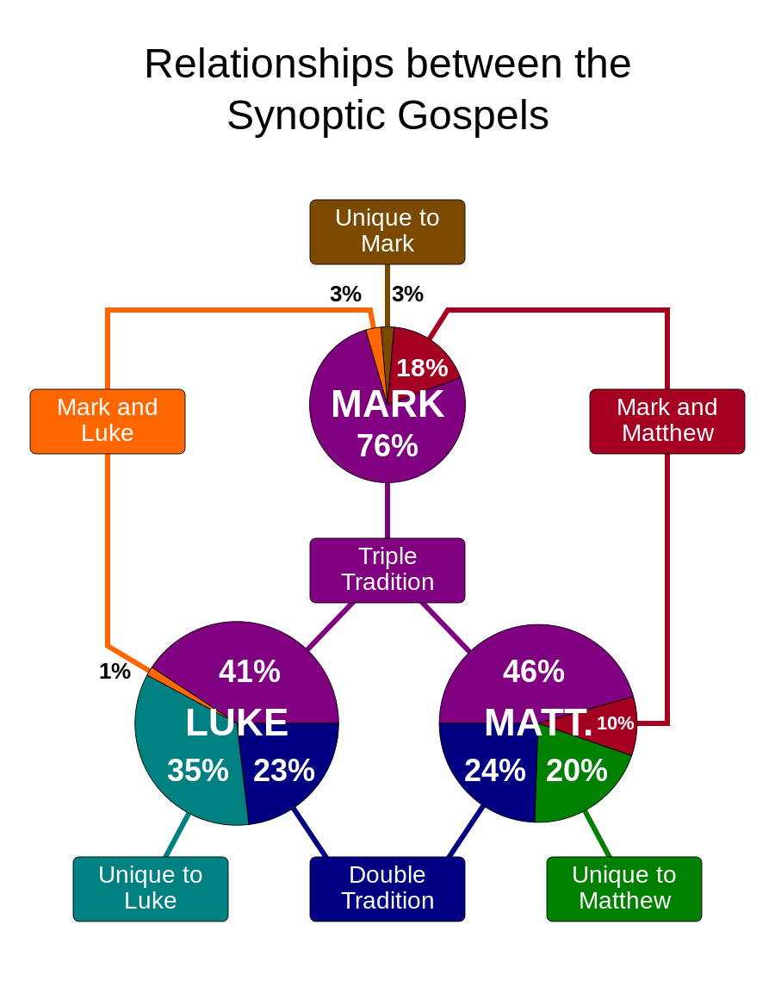
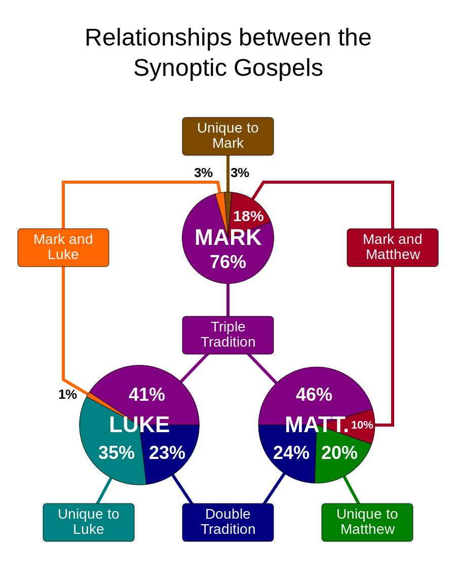

Book of John
(Gospel according to John)
| # |
|
Matthew |
Mark
|
Luke
|
John
|
|---|---|---|---|---|---|
| 1 |
Writer
|
An unknown Jewish Christian, traditionally the Apostle Matthew |
A second generation Christian, possibly a follower of Peter
|
A Gentile Christian, traditionally Luke the physician and Paul's traveling companion
|
The "beloved disciple" the Apostle John
|
| 2 |
Date Written
|
75-80 CE |
65-70 CE
|
80-85 CE
|
90-98 CE
|
| 3 |
Where the books were written
|
Most likely Antioch of Syria |
Rome
|
Possibly Rome or Caesarea
|
Probably written in Ephesus
|
| 4 |
Hisotrical Situation
|
Written after Romans had destroyed all of Jerusalem |
The Romans subdue armed Jewish rebellions. Christians experiencing persecution in Rome
|
Written when the persecution of Jews and Christians was intensifying
|
Jewish leaders banned Christians from the synagogues
|
| 5 |
The Author's Community
|
A Jewish Christian community |
A Gentile Christian community in Rome undergoing persecution
|
Written to "Theophilus"
|
Jews, Gentiles, and Samaritans
|
| 6 |
Who is Jesus?
|
Promised Messiah of Jewish people, greatest prophet, teacher of the "new law" calling people to be faithful of the Old Testament covenant with God |
Healer, Miracle Worker, Teacher, Misunderstood by those closest to Him
|
Merciful, Compassionate, Prayerful teacher with special concern for women, the poor, and non-Jews (Gentiles)
|
Noble, Powerful divine--fully in control of His destiny
|
| 7 | perspectives | salvation historical fulfillment—the climax of prophetic hope |
functional Christology—obedient to the mission of the Father |
historical—the Man among men | ontological Christology—the incarnate Son of God |
| VersesJesusSayings | 645 | 283 | 584 | 418 | |
| VersesTotal | 1071 | 678 | 1150 | 879 | |
| VJS/VT= | 60% | 41% | 50% | 47% | |
| Quots from OT | 66 | 31 | 27 | 16 | |
| witness+testify | 4+8=12 | 2+7=9 | 4+5=9 | 4+30=43 | |
| Believe | 11 | 14 | 9 | 98 |
--
| # | Sayings | OT | Matt | Mark | Luke | John |
| 1 |
Father, forgive them, for they know not what they do. 父啊！赦免他們， 因為他們所作的， 他們不曉得 |
23:34 | ||||
| 2 |
Turly, I say to you, today you will be with me in paradise. 我實在告訴你， 今日你要同我在樂園了 |
23:43 | ||||
| 3 |
Woman, behold you son. Son, behold you mother. 母親， 看你的兒子,,看你的母親 |
19:26-27 | ||||
| 4 |
My God, My God, why have you forsaken me? 我的神！我的神！為甚麼離棄我？ |
Psalm 22:1 | 27:46 | 15:34 | ||
| 5 |
I thirst. 我渴了 |
19:28 | ||||
| 6 |
It's finished 成了！ |
19:30 | ||||
| 7 |
Father, into thy hands I commend my spirit. 父啊！我將我的靈魂交在你手裏 |
23:46 | 19:30 |
- 

Synoptic Gospels Overlap Statistics
93 % Mark is found in Matt and Luke. (Harmony, p261)
91 % Mark is found in Matthew,
53 % Mark is found in Luke. (...)
1) common cx.
93=91+53-cx
cx=51
2) Mark and Matt only
91-51=40
3) Mark and Luke only
53-51=2
It is near-unanimous consensus in the ancient church that the synoptic gospel writers drew upon personal memory and first hand reports, did not see each other's work before writing lasted until the mid-eighteenth century. (Harmony, p261)
Gospel of John and Synoptics
Compared with synoptic gospels, issues:
1) changes in Greek style
2) problems of sequence
3) repetitions in discourse material
John does not recored
1) the virgin birth
2) the baptism
3) the temptation
4) the transfiguration
5) Eucharist/Greatest Commands/Great Commisson
6) the agony in the garden of Gethsmane,
7) the ascension.
synoptic parables and cures of demoniacs and lepers, less significant materials.
John and Synoptic Gospels Paralel Statistics
21% (=6/21) of John in synoptic gospels. (based on story in chapters)
25% (=2/8) of John in synoptic gospels. (based on signs)
22% (=8/35) of all signs in the Gospels in John (QiDao p975)
https://www.youtube.com/watch?v=gO9mdZIJYbU
1. synpotics look at outside--what He say and did. John look inside-who He was.
2. God use different personality to write one union personality of God.
3. not mention Kingdom of Heaven.
4. 7 miracle 5 is new 2 are same. John did not call it as miracle but sign--where it point to.
look through miracle.
one to one vs crowd.
5. based on outline of Mark. 30 months of north in Galilee followed by 6 months in south.
John almost all in south.
conflicts John concentrated on south.
6. John has not short parables.
7. John wrote in Ephesus in Turkey the mixture of Greek and Hebrew.
western is Greek style: vertical time. between key words: heaven and world. up and down. Up/down
Hebrew horizontal in time. past present future.
8. author. between Galilee and south.
12 disciple 5 or 7 of them are relatives of Jesus. (North)
not believe until after ascesion.
James and Jude
three close Peter, James and John. among 3 has 1 favorite, last surving.
that's why Jesus ask John to care his mother.
Peter jelous to John.
9. purpose of the book.
go on believing.
faith go on believing.
10. 3 phases
1. believing not faith which is noun.
- credence: to believe that is true --accept
- confidence: believe in that. obey and do sth to show trust.--doing
- continuance: go on believing, holding the truth (faith==faithfullness), eternal. --holding.
trust on someone, you will trust him whatever happened whatever cost.
if you are full of faith, you are faithfull--go on believing in someone.
2. Truth is someone. what is truth?
Truth is not proposition. but a person. --great revelation of John gospel.
people always think truth is something not the person.
what do you think of Jesus.
rumors and lengends began to creep in
speculation came in about Jesus.
speculation(推测): the forming of a theory or conjecture without firm evidence.
https://www.youtube.com/watch?v=G2R7ljD_I7k
low the John B. higher Jesus.
Hull humanity full divinity.
the magic number 7. a perfect round number in Hebrew is always 7.
it is not our figuring but it was in Hebrew thinking. The most important number in the Bible.
anything that falls short of that is less than perfect six six six. but 777 is something. (13:41)
seven persons: witness (70 times) personal testimony for the truth.
John the B
Nathaniel
Jesus
Peter
Martha
Thoma
John
severn works: single out only 7 signs. supernatural,
seven I AM. talk about himself.
Jesus has 250 names and titles.
I AM is YAWH
Synoptis start from
Math start Abraham.
Luke start Adam.
the unique name: Logos. the word.
what is the word.
In Ephesus 600 years before John was writing this in 568 bc.
Hearaclitus. (24:54)
was the founder of science.
keep asking "why" which is logos. Bio-logy
every branch of science is looking for the logos the reason. why things are as they are.
science is small part, and become less and less.
John said you need ask the reason of whole.
What is the reason why it's all here.
the answer is Jesus. All is made by jesus son of God.
that is the reason I was here.
He is the reason why, he is the logos. excepting concept.
LXX (70) professor Hebrew Greek.
on of them is called Philo. He said the Logos we should not talk about it but HE.
He is not taling about a person but he was personifying it.
Wisdom is personified as woman.
Logos: (4 vital things)
1. his eternity: already there.
2. his personality (face to face, personal, son and God love each other. hence God is love. single person cannot love)
3. his deity: was God. rather than a god.
4. his humanity. incarnation. became flesh.
Life:
life/death
light/darkness
truth/lies
Slavery/freedom
love /wrath/
heaven / world.
Holy Spirit.
ch1 Baptised with /in Holy Spirit
ch3 reborn
ch4 living water, true worship
ch7 feast of tabernacles, spring of water.
ch14-16: paraclete-called beside.
encourager, standby
spirit of truth
another comforter.
ch20. sign: blew.
command:receive.
=============